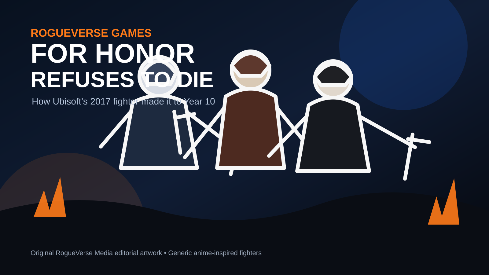

OUR CULTURE / GAMING • AUGUST 5, 2026
For Honor Refuses to Die: How Ubisoft’s 2017 Fighter Made It to Year 10
Nearly a decade after launch, Ubisoft is still adding heroes, seasonal content and balance updates to one of gaming’s strangest long-term survivors.

When For Honor launched in February 2017, few people would have bet on it becoming a decade-spanning multiplayer game. Its early years were defined as much by technical trouble, balance complaints and a brutal learning curve as they were by its unique combat system. Yet in 2026, Ubisoft is still building new content for Heathmoor.
That makes For Honor one of the more interesting live-service stories in modern gaming. It never became the industry’s biggest phenomenon. It did something more unusual: it found a dedicated audience, survived its roughest years, and became difficult to replace.
Year 10 is not maintenance mode
Ubisoft’s Year 10 roadmap makes the strongest case that For Honor is still an active game rather than a museum piece. The year includes two new Heroes, nine Hero Skins, additional armor variations, a converted Dominion map, Hero Fests, Hero Trials and a Reputation cap increase to 100.
That matters because new heroes are expensive content. They require concept work, modeling, animation, sound, gameplay design, testing and balance support. A game at the end of its life usually stops receiving this kind of investment.
Instead, Year 10 is structured as both a celebration of the game’s history and another full chapter in it.
Arakure joins the war
The newest hero is Arakure, a Samurai-faction Assassin who arrived July 23. Ubisoft built her around tonfas, rapid pressure, target swapping and a Strike Meter mechanic.
Her identity fits the larger direction For Honor has taken over the years. The launch roster was built around relatively familiar warrior archetypes. The modern roster is much more willing to mix historical inspiration with theatrical personalities, specialized combat systems and increasingly distinct silhouettes.
Arakure also shows that Ubisoft is still designing around the game’s veteran audience. A new hero cannot simply look cool. She has to create new matchup questions for players who may already know years of attack timings, feints, parries and counters.
The updates keep coming
Patch 2.69.0 arrived on July 23 alongside the latest Year 10 content. Ubisoft’s support continues to include character tuning, systemic adjustments and seasonal updates rather than just cosmetic storefront rotations.
That distinction is important. Cosmetics can keep revenue flowing, but balance patches keep a competitive game alive.
For Honor has spent years surviving through repeated mechanical adjustments. Its longevity is tied to Ubisoft’s willingness to keep touching the combat system instead of freezing it in place.
Metal Trials gives veterans another reason to return
One of the biggest August hooks is the return of Metal Trials, the event associated with the fan-favorite Test Your Metal format. The 2026 run is scheduled for August 13 through September 3.
For veterans, that creates nostalgia. For newer players, it opens a door to content and rewards they may have missed the first time around.
Ubisoft is using Year 10 intelligently here. The game has enough history now that its own past can become content.
But is anybody still playing?
The honest answer is yes, although there is no single public number that captures the entire population across every platform.
Recent Steam data has shown several thousand average concurrent players, with peaks climbing substantially higher around content drops. Steam is only one slice of the population because For Honor also exists through Ubisoft Connect and on consoles.
That means Steam figures should not be mistaken for a total player count. What they do show is persistence. Nine years after launch, the game still has a visible PC audience large enough to sustain matchmaking and seasonal spikes.
Why did For Honor survive?
The most convincing answer may be simple: nobody successfully replaced it.
There are medieval combat games. There are fighting games. There are team-based action games. There are historical fantasy games. But very few combine those ideas the way For Honor does.
Its Art of Battle system makes even basic encounters feel personal. Players read attack direction, bait reactions, feint, parry, dodge, counter and punish. A duel can become a tiny psychological war inside a much larger battlefield.
That creates a huge skill ceiling. A player can understand one hero and still be completely unprepared for dozens of matchups. Every new hero reshapes that web of knowledge.
A niche can be stronger than hype
Modern publishers often chase enormous launch numbers because live-service games are expected to become permanent platforms immediately. That strategy has produced plenty of spectacular collapses.
For Honor took the opposite path, partly by accident. Its launch was messy. Its community shrank. Ubisoft kept improving it. What remained became unusually loyal.
A game does not need to dominate the market forever. It needs enough players to justify continued development, and enough identity to keep those players from drifting toward a direct substitute.
For Honor appears to have found that equilibrium.
The irony of live-service longevity
Plenty of newer games were designed from day one to survive for ten years and failed within months. For Honor actually reached that territory without ever looking like the obvious candidate.
Its path was not glamorous. Dedicated servers, balance reworks, faction expansion, system changes, content experiments and endless community arguments all became part of the process.
That may be a more realistic picture of long-term multiplayer survival than the clean roadmaps publishers like to show before launch.
Where is For Honor 2?
As of August 5, 2026, Ubisoft’s public messaging remains focused on Year 10 of the existing game. There is no official For Honor 2 announcement in the company’s current roadmap materials.
That does not mean a sequel is impossible. It simply means the existing game still has announced content left to deliver, including another Knight hero later in Year 10 and additional map, armor and event support.
RogueVerse verdict
For Honor did not win the live-service war by becoming the biggest game in the world.
It survived by becoming hard to replace.
That is a different kind of victory. The combat still feels distinct. The player base still has reasons to return. Ubisoft is still spending resources on heroes, events and balancing. And Year 10 is still moving forward.
Plenty of games launched after For Honor, chased a larger audience, disappeared and became footnotes.
Meanwhile, somewhere in Heathmoor, somebody is still getting thrown off a ledge.
For Honor never conquered gaming. It just refused to leave.
Sources
- Ubisoft: Warrior’s Den Recap, Year 10 Season 2 TU2
- Ubisoft: Year 10 Cycle of War reveal
- Ubisoft News: Arakure reveal
- Steam Charts: For Honor
For Honor and related names, trademarks, characters and game assets are property of Ubisoft and their respective rights holders. RogueVerse Media is an independent editorial publication and is not affiliated with or endorsed by Ubisoft.